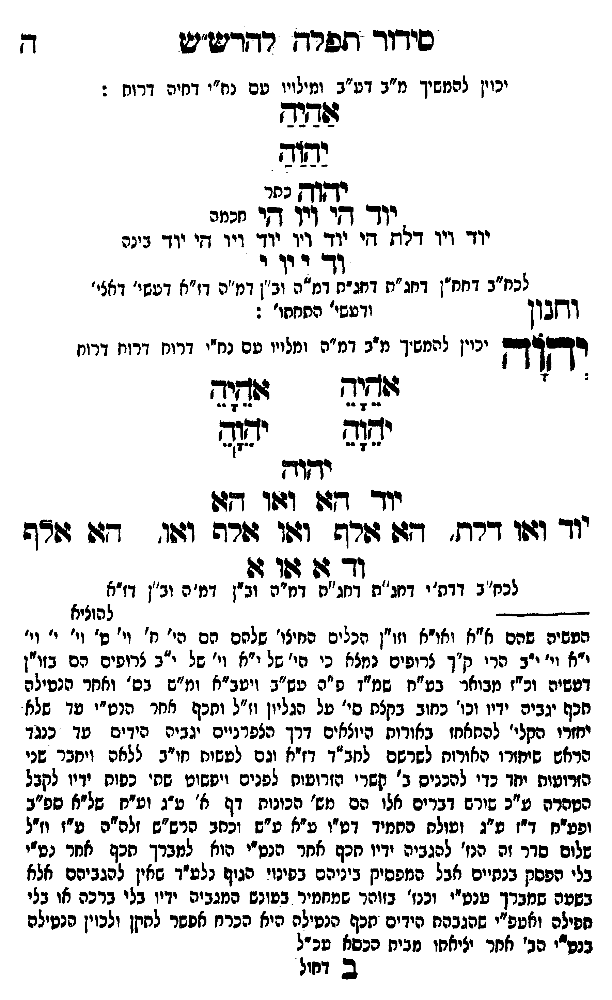

Neue Klartextfassung
[יכוין להמשיך מ"ב דע"ב ומילויו עם נח"י דחיה דרוח:] אַהַיַהַ יַהַוַהַ יהוה [כתר] יוד הי ויו הי [חכמה] יוד ויו דלת הי יוד ויו יוד ויו הי יוד [בינה] וד י וי י [לכח"ב דחח"ן דחג"ת דחג"ת דמ"ה וב"ן דמ"ה דז"א דעשי' דאצי' ורביעי' התחתו':] (וחנון) יְהוָה [יכוין להמשיך מ"ב דמ"ה ומלויו עם נח"י דרוח דרוח דרוח] === טבלה === [טור ימין] אָהָיָהָ יָהָוָהָ [טור שמאל] אָהָיָהָ יָהָוָהָ === סוף טבלה === יהוה יוד הא ואו הא יוד ואו דלת, הא אלף ואו אלף ואו, הא אלף וד א או א [לכח"ב דדת"י דחג"ת דחג"ת דמ"ה וב"ן דמ"ה וב"ן דז"א]
Original gegen neue OCR · Niqqud für Vergleich ausgeblendet
Original
[יכויןK014-001 להמשיך מ"ב דע"ב ומילויו עםK014-002 נח"י דחיה דרוח:] אהיה יהוה יהוה [כתר] יוד הי ויו הי [חכמה]K014-003 יוד ויו דלת היK014-004 יוד ויו יוד ויו הי יוד [בינה] וד י וי י [לכח"בK014-005 דחח"ן דחג"ת דחג"תK014-006 דמ"ה וב"ן דמ"ה דז"א דעשי' דאצי' ורביעי' התחתו':] (וחנון) יהוה [יכויןK014-007 להמשיך מ"ב דמ"ה ומלויו עם נח"י דרוח דרוח דרוח] === טבלה === [טור ימין] אהיה יהוה [טור שמאל] אהיה יהוה === סוף טבלה === יהוה יוד הא ואו הא יוד ואו דלת, הא אלף ואו אלף ואו, הא אלףK014-008 וד א או א [לכח"ב דדת"י דחג"ת דחג"תK014-009 דמ"ה וב"ן דמ"ה וב"ן דז"א]K014-010
OCR · fehlbar
כידוד תפרש רדריב"ש ד יכויןK014-001 להמשיך מ"ב דע"ב ומילוי טםK014-002 נח"י דחיה דרוח : גללש נכתוב נגוש יש (וג. ל ו: [(. גיK014-003 יוד ויו דלת דיK014-004 יוד ויו יוד ויו די ידוד בינה ו- דיו ו לכח"בK014-005 דחח"ן דחג"ת דחגחK014-006 דמ"ה וב"ן דמ"ה דז"א דעשי' דאצי' ובון ודעשי' התחתו' : בבללם יכויןK014-007 להמשיך מ"ב דמ"ה ומלויו עם נח"י דרוח דרוח דרו ש זף גוזזיח ז([יח ד"י דך ר"ר 7- ' -- יג(ב יזאןשס שיף בים ף ם [- יד(וד . יודך ד(זו וטו דזוK014-008 וד ודו דרח. דש זורש וצוו רפ וגוו דג: גודף א[לללל לכח"ב דדח"י דג"ח ידחג"ח'K014-009 דמ"ה וב"ן דמ"ה וב"ן דז"א ללללללללל להוציא הפשיה שהם א"א ואו"א וזו"ן הכלים החיצו' שלפם הם הי. ח' וי' ט' וי' י' גו' י"א וי' ייב הרי ק"ך צרופים נמצא כי הי' של י"א וי' של י"ב צרופים הם בזו"ן דעשיה וע"ז מבואר -. בט"ח שמ"ך פ"ה עש"ב ויטב"א ומ"ש בס' ואחר הנטילה תכף יגביה ידיו וכו' כחוב בקצת סי' על הגליון וז"ל וחכף אחר הנט"י עד שלא יחזדו הקלי' להאחז באורוח היוצאים דרך הצפרגיים יגביה ה(ךים טד כנגד הראש שיחזרו האודוח לשרשם לחב"ד דזיא (גם לעשיח חי"ב ללאה ויחבר שנו הזרועות יחד כדי להכניס ב' קשרי הזרוטוח לפנים ויפשוט שחי כפוח ידיו לקבל הטהרה ע"כ שירש דברים אלו' הם מש' הכונות דף א' ע"ג ועזח. של"א ספ"ב ופע"ח דז ע"ג וטולת סחמיד דטיו ע"א ע"ש וצחב פרש"ש זלה"ה ע"ז וז"ל שלום סדר זה הנז' לפגביה ידיו חכף אחר הנט"י הוא למברך חכף אחר נט"י בלי הפסק בנתיים אבל המפסיק ביניהם בפינוי הגוף נלע"ד שאין להגביהס אלא בשעה שמברך ענט"י וכנז' בזוהר שמחמיד בעונש המגביה ידין בלי ברכה או בלי חפילה ואטפ"י שהגבהת הידים תזכף הנטילה היא הכרח אפשר לחקן ולכוין הנטילה בנטרי הב' אחר יציאחו מביח הכסא עכ"ל ב וחולK014-010